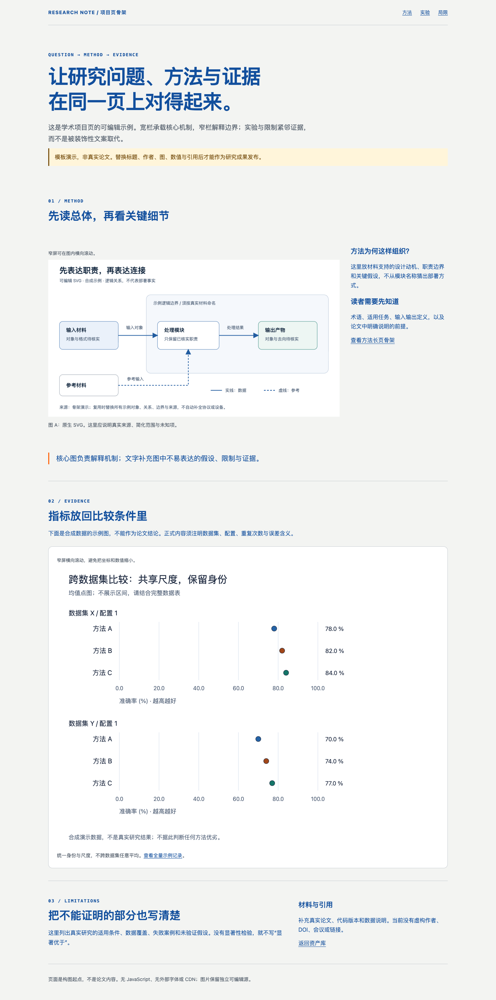
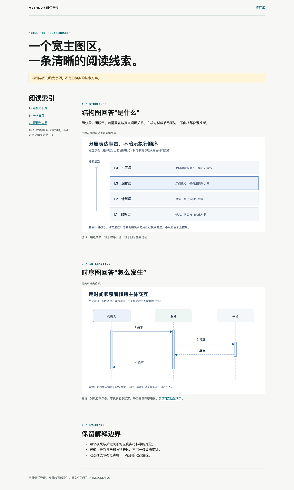
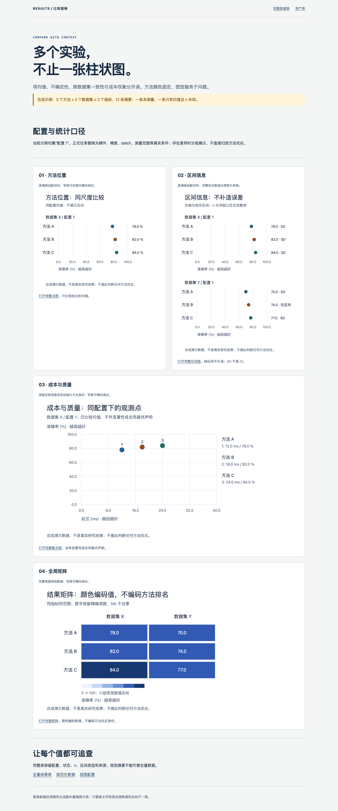
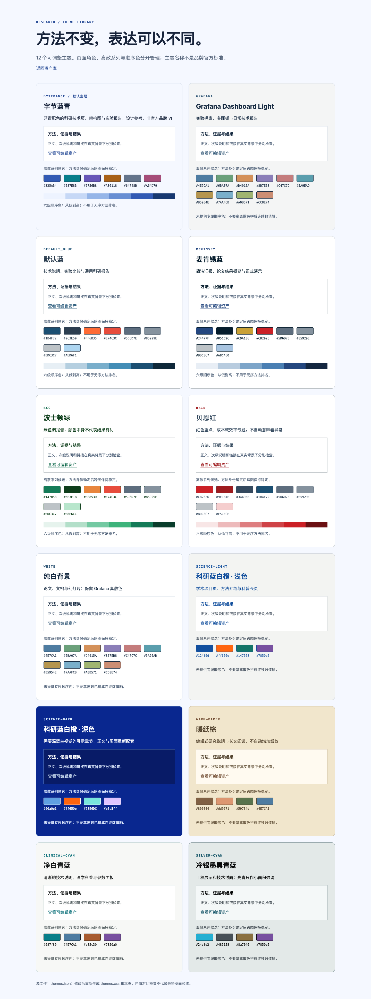
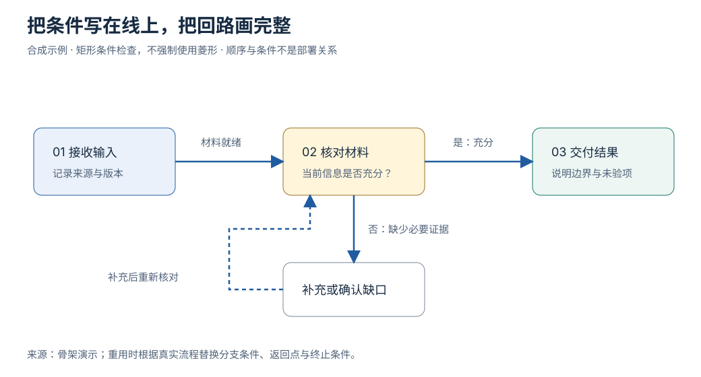
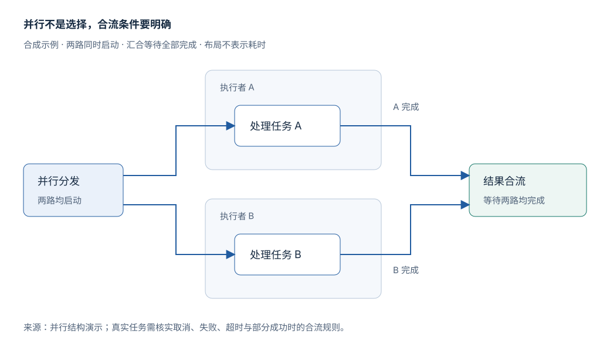
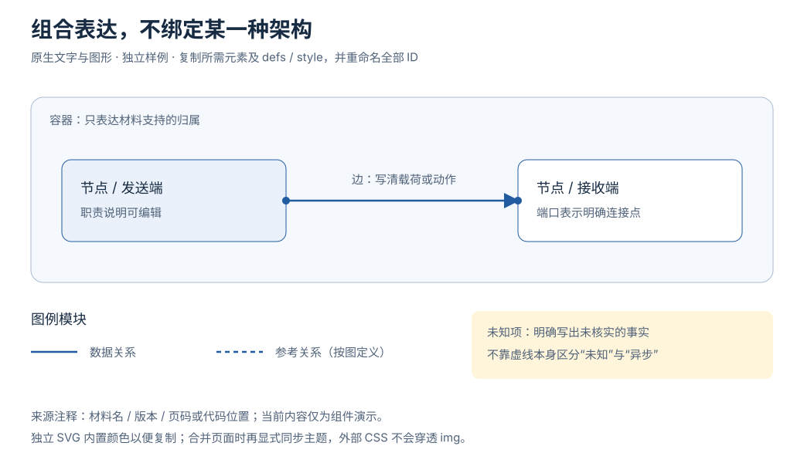

01 / COMPOSITION
构图服务于阅读任务
跨栏讲述研究、侧栏解释方法、矩阵比较实验。不是给所有内容套同一个卡片网格。

学术项目页 · 杂志跨栏
跨栏标题、宽主图、窄解释栏，再进入实验与限制。

方法说明 · 侧栏导读
窄栏定位、宽栏解释，结构与时序各有职责。

实验结果 · 网格矩阵
同一输入的均值、区间、权衡与矩阵，全量表始终可查。

12 个主题 · 不绑定图形语法
新增字节蓝青；另有 Grafana、默认蓝、咨询主题、科研蓝白橙、暖纸棕、青蓝与冷银。
02 / DIAGRAM GRAMMAR
先选关系，再选外观
每张图是原生 SVG，文字、节点和连线均可编辑。按任务改写对象、边界与来源。
 架构与数据关系 · 逻辑边界、处理和参考输入。
架构与数据关系 · 逻辑边界、处理和参考输入。
条件分支与回路 · 写清条件和返回点。
并行与泳道合流 · 不把选择分支画成并行。 请求时序 · 参与者、生命线、消息与返回。
请求时序 · 参与者、生命线、消息与返回。 分层职责 · 抽象层次不等于执行顺序。
分层职责 · 抽象层次不等于执行顺序。
组件板 · 容器、节点、端口、箭头、图例和来源注释。03 / EXPERIMENTS
用同一份数据，回答不同问题
均值点图、区间图、小多图、成本—质量散点与热力矩阵，配套完整结果表。数据与绘图配置可修改，脚本重新生成坐标和标签。
 概览缩略图；打开源文件查看完整文字。数据为合成摘要，不代表真实研究。
概览缩略图；打开源文件查看完整文字。数据为合成摘要，不代表真实研究。
04 / OPTIONAL MOTION
动态演示，不伪装实时监控
路径流动、顺序描线、阶段聚焦；完整静态图始终保留。控件可暂停，减少动态效果时自动回到静态。
打开动态示例并播放如何组合
- 选择语法关系、流程、时序还是多实验？
- 选择构图与主题沿用项目风格或选适合的主题。
- 按需增加动效只解释已核实关系，不添加虚假指标。
- 替换示例并复验源文件、数据与最终预览保持一致。
05 / FEISHU SHARING · V0.3.0
嵌入、原生编辑、独立网页
HTMLBox 自包含模块、飞书原生数据输入、妙搭托管三条路线。依据阅读和编辑需求选择，分享前确认目标与访问范围；这里仅提供本地准备资产，没有发布真实内容。
可编辑不止一种含义
HTML/SVG 源可改，原生组件数据可改，受众可打开，是不同的承诺。API 保存、真实客户端渲染与权限配置分别核验。
内联数据、零值与缺失、完整表、用户点击 CSV 导出都在示例中保留。飞书宿主交互和下载能力需另外实测。